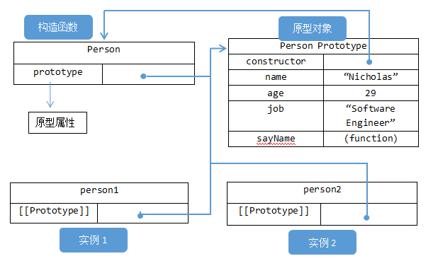
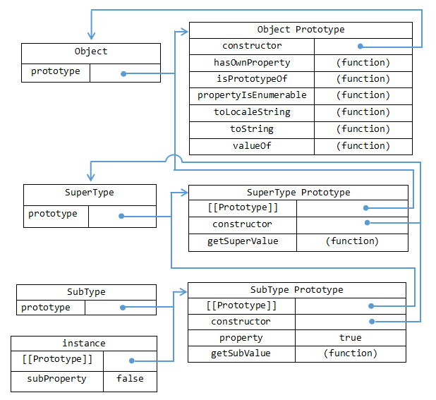

| 关键词 | 概念 | 代码或关系 |
|---|---|---|
| 对象 | ECMA-262把对象定义为：“无序属性的集合，其属性可以包含值、对象或者函数。”这就相当于说对象是一组没有特定顺序的值，它的每个属性或方法都有一个名字，而每个名字都映射到一个值，是以键值对的形式存在的。 |
创建一个Object的实例
|
| 原生对象 | 独立于宿主环境的 ECMAScript 实现提供的对象，例：Object、Array、Function、Date、RegExp、String、Boolean、Number等，需要用new关键字创建实例。 |
利用Array对象创建了一个长度为3的颜色数组colors
|
| 内置对象 | ECMA-262对内置对象的定义是：“由ECMAScript实现提供的、不依赖于宿主环境的对象，这些对象在ECMAScript程序执行之前就已经存在了”。例：Math、Global，它们不需要用new关键字创建实例，直接使用。它们也是原生对象。 | 以下创建了一个立即调用的函数表达式，返回this的值。在没有给函数明确指定this值得情况下（无论是通过将函数添加为对象的方法，还是通过调用call()和apply()）,this值等于Global对象。 |
| 宿主对象 | 由ECMAScript实现的宿主环境提供的对象，可以理解为：浏览器提供的对象。所有的BOM和DOM都是宿主对象。 | |
| 自定义对象 | 开发人员自己定义的对象 | |
| 构造函数 | 构造函数本质是函数，它的特殊之处在于它是用来初始化新创建的对象的，使用new关键字调用构造函数，即创建了一个构造函数的实例，也可以说创建了一个对象。以下例子定义了一个构造函数：
|
下面这张图展示了构造函数、实例、原型、原型对象之间的关系

在上图中，Person.prototype指向原型对象，而Person.prototype.constructor又指回了Person。原型对象中除了constructor属性外，还包括后来添加的属性和方法。Person的两个实例——person1和person2都包含一个内部属性，该属性仅仅指向了Person.prototype，换句话说，它们与构造函数没有直接的关系。 |
| 实例 | 实例是由所定义的构造函数创建的，其原型对象就是构造函数的prototype。以下例子创建了Person的两个实例：
|
|
| 原型 | 我们创建的每个函数都有一个prototype（原型）属性，这个属性是一个指针，指向一个对象，而这个对象的用途是包含可以由特定类型的所有实例共享的属性和方法。换句话说，prototype就是通过调用构造函数而创建的那个对象实例的原型对象。 | |
| 原型对象 | 每个函数都有的prototype属性指向函数的原型对象。在默认情况下，所有原型对象都会自动获得一个constructor（构造函数）属性，这个属性是一个指向prototype属性所在函数的指针。 | |
| 原型链 | 所有的内置构造函数（以及大部分自定义的构造函数）都有一个继承自Object.prototype的原型。例如Date.prototype的属性继承自Object.prototype，那么由new Date()创建的Date对象的属性同时继承自Object.prototype和Date.prototype。这一系列链接的原型对象就是所谓的原型链。它是实现继承的主要方法，基本思想是利用原型让一个引用类型继承自另一个引用类型的属性和方法。
以上代码定义了两个类型：SuperType和SubType。每个类型分别有一个属性和方法。它们的主要区别是SubType继承了SuperType，而继承是通过创建SuperType的实例，并将该实例赋给SubType.prototype实现的。实现的本质是重写原型对象，代之以一个新类型的实例。 换句话说，原来存在于SuperType的实例中的所有属性和方法，现在也存在于SubType。prototype中了。 |
以下这张图展示了基础原型链

SubType的原型是SuperType的实例，所以它不仅具有作为一个SuperType的实例所拥有的属性和方法，而且内部还有一个指针，指向了SuperType的原型。最终结果是：instance指向SubType的原型，SubType的原型又指向SuperType的原型。getSuperValue()方法任然还在SuperType.prototype中，但property则位于SubType.prototype中。这是因为property是一个实例属性，而getSuperValue()是一个原型方法。既然SubType.prototype现在是SuperType的实例，那么property当然就位于该实例中了。所以instance.constructor现在指向的是SuperType。 |